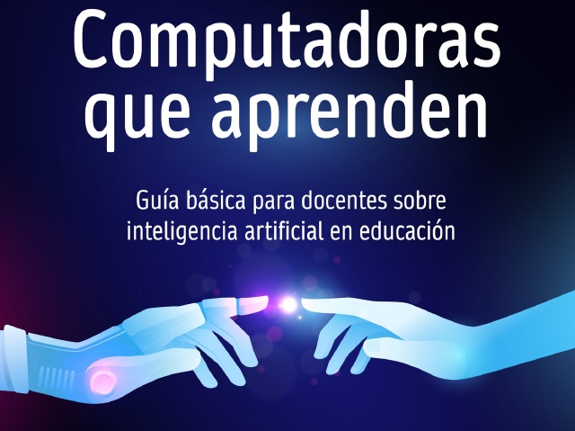

Artificial intelligence¶
Artificial Intelligence Course¶
Curso online gratuito Elementos de IA.
Libro Computadoras que aprenden¶
The world of artificial intelligence has generated a large amount of debate and opinion among experts and influential personalities. Already in 2014, Stephen Hawking, one of the most renowned scientists of our time, warned about the potential dangers of AI and its ability to overcome humanity. Closer in time, Elon Musk, innovative entrepreneur, has advocated for a responsible and ethical approach in the development of AI, arguing that it can be a valuable tool to solve problems in our world but always under strict regulation.
Both points of view are important when it comes to understanding the challenges and opportunities that this technology offers, especially when applied to education.
That is why this book written by Diego Craig, a professional with solid training and extensive experience in the field of educational technology, is so valuable, who aims to introduce the reader to the key concepts of artificial intelligence and its application in the field. educational.
Topics such as the impact of ChatGPT are addressed, exploring the opinions and debates surrounding its use; Ethical issues, privacy, definitions, their use for dialogue, and practical applications in a variety of contexts are examined.
Diego Craig provides an introduction to the key concepts of AI and its application in education, addressing both the positive aspects and potential challenges and risks.
DotCSV Videos¶
Videos of Jaime Altozano¶
TED Videos¶
Vídeos de Veritasium¶
Computers and Artificial Intelligence